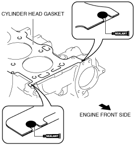

L8/LF/L3/L5 [Engine WM] ➭ ENGINE ➭ MECHANICAL ➭ CYLINDER HEAD ASSEMBLY (II)
id011000504400
1. Assemble in the order indicated in the table.
|
belbze00000217 |
|
1 |
Cylinder head gasket (See Cylinder Head Gasket Assembly Note.) |
|---|---|
|
2 |
Cylinder head |
|
3 |
Cylinder head bolt (See Cylinder Head Bolt Assembly Note.) |
|
4 |
Tappet |
|
5 |
Camshaft (See Camshaft Assembly Note.) |
|
6 |
Camshaft cap |
|
7 |
Camshaft sprocket, variable valve timing actuator (With variable valve timing mechanism) (See Camshaft Sprocket, Variable Valve Timing Actuator (With variable valve timing mechanism) Assembly Note.) |
|
8 |
OCV (With variable valve timing mechanism) |
Cylinder Head Gasket Assembly Note
1. Apply silicone sealant to the areas shown in the figure.
Caution• Install the cylinder head gasket and cylinder head before the applied silicone sealant starts to harden.
|
|
 acxaaw00001646
acxaaw00001646Thickness
4—7 mm {0.16—0.27 in}
2. Install the cylinder block with a new cylinder head gasket.
3. Apply silicone sealant to the areas shown in the figure.
|
 acxaaw00001647 |
Thickness
4—7 mm {0.16—0.27 in}
4. Install the cylinder head referring to the Cylinder Head Assembly Note.
Cylinder Head Bolt Assembly Note
1. Tighten the cylinder head bolts in the order indicated in the figure in 5 steps.However, use the SST (49 D32 316) in Steps 4 and 5.
|
belbze00000215 |
Tightening torque
1. 3—11 N·m {30.6—112.1 kgf·cm, 26.6—97.3 in·lbf}
2. 13—17 N·m {1.4—1.7 kgf·m, 9.59—12.5 ft·lbf}
3. 43—47 N·m {4.4—4.7 kgf·m, 31.8—34.6 ft·lbf}
4. 88°—92°
5. 88°—92°
1. Apply the gear oil (SAE No.90 or equivalent) to each journal of the cylinder head as shown in the figure.
|
am5ezw00001181 |
2. Set the cam position of No.1 cylinder at the top dead center (TDC) and install the camshaft.
3. Apply the gear oil (SAE No.90 or equivalent) to each journal of the camshaft as shown in the figure.
|
|
 am6zzw00002177
am6zzw000021774. Temporarily tighten the camshaft cap bolts evenly in 2—3 steps.
5. Tighten the camshaft cap bolts in the order shown with the following two steps.
|
belbze00000216 |
Tighten torque
1. 5.0—9.0 N·m {51.0—91.7 kgf·cm, 44.3—79.6 in·lbf}
2. 14.0—17.0 N·m {1.5—1.7 kgf·m, 10.4—12.5 ft·lbf}
Camshaft Sprocket, Variable Valve Timing Actuator (With variable valve timing mechanism) Assembly Note
1. Temporarily tighten the camshaft sprocket or variable valve timing actuator (With variable valve timing mechanism) installation bolts by hand until the timing chain is installed.
2. Fully tighten the camshaft sprocket or variable valve timing actuator (With variable valve timing mechanism) installation bolts after timing chain installation.